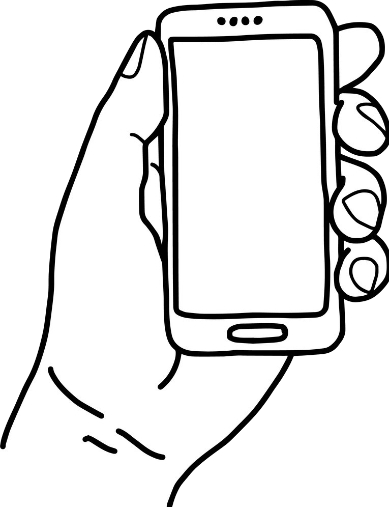

Psicológica
Psicológica-MENTE es una página que te muestra diferentes podcast para aprender los últimos avances en psicología científica y lo mejor es que puedes elegir contenido en inglés y en español.
Contenido en Inglés Contenido en EspañolÚltimos Episodios
Episode 93: Does Nostalgia Have a Psychological Purpose?
Bonus Episode: Your Boss is Watching You. Is that OK?
Últimos Episodios
Episodio 111: Ataques de pánico
Apuntes de psicología #18: La paradoja del incentivo
Temas
Este es nuestro top de temas más buscados:
¿Te gustaría que agregaramos otro tema o tienes alguna duda?
¡Escríbenos!
